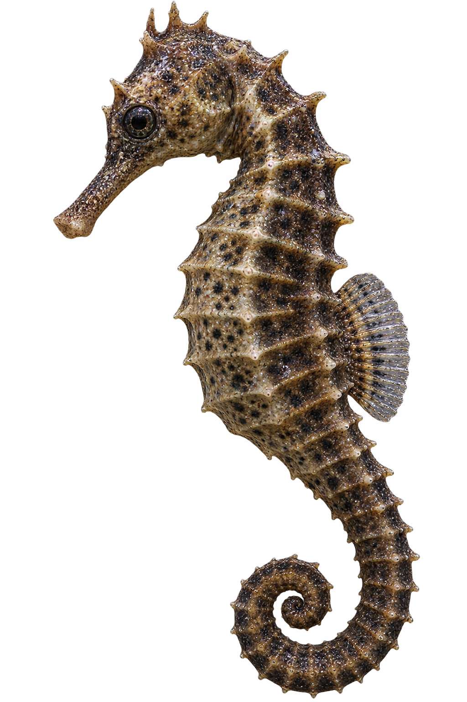
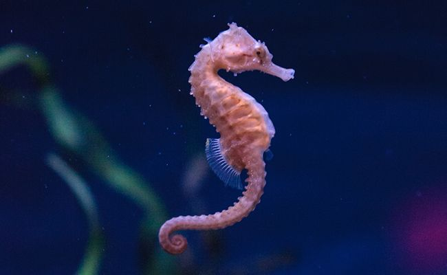
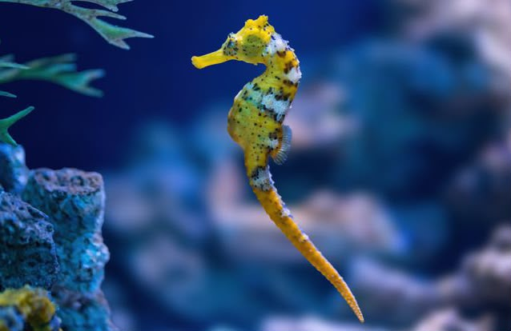
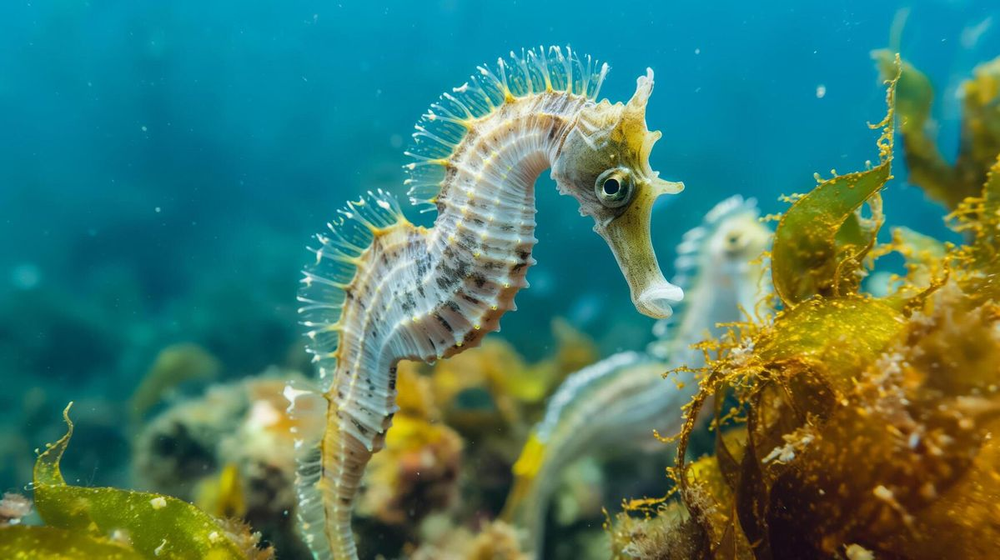

Cavalo-Marinho
Hippocampus
O cavalo-marinho é um pequeno peixe marinho conhecido por seu corpo alongado, focinho tubular e cauda enrolada. Apesar de sua aparência diferente, ele possui características de peixe e vive principalmente em áreas costeiras.

Curiosidades
Alimentação
Alimenta-se principalmente de pequenos crustáceos, larvas e outros organismos microscópicos, que captura usando seu focinho.
Tempo de vida
Dependendo da espécie, pode viver aproximadamente 1 a 5 anos.
Cauda
Sua cauda é preênsil, permitindo que ele se agarre a algas, corais e outras estruturas para não ser levado pelas correntes.
Nascimento
A fêmea deposita os ovos na bolsa do macho, onde eles ficam protegidos até se desenvolverem e os pequenos cavalos-marinhos nascerem.
Importantes para o ecossistema
Faz parte da cadeia alimentar e ajuda a manter o equilíbrio das comunidades marinhas onde vive.
Habitat
Pode ser encontrado em recifes de coral, pradarias marinhas, manguezais e áreas costeiras.


Você Sabia?
No cavalo-marinho, é o macho que carrega os ovos e dá à luz os filhotes.
